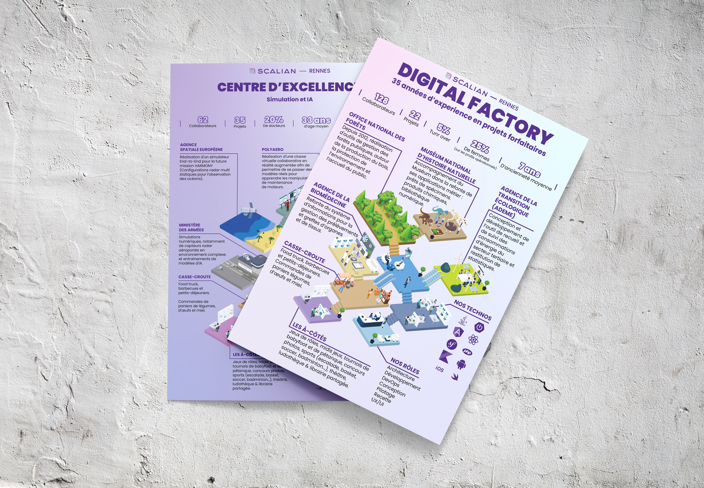
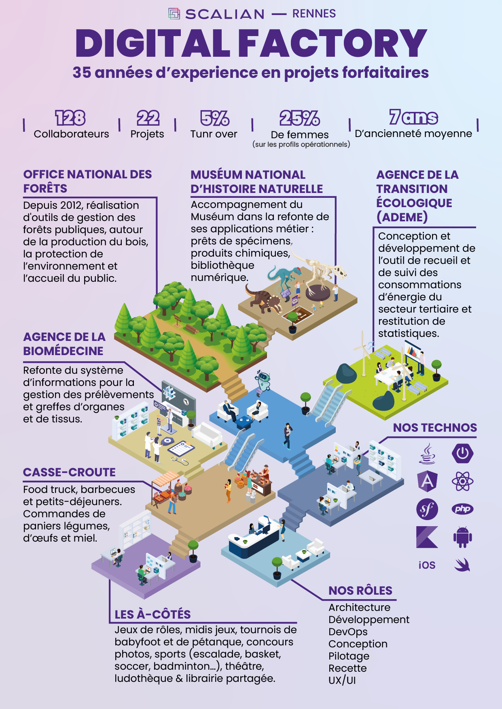

Afin de présenter les activités de Scalian Rennes aux futurs collaborateurs, le service des ressources humaines m’a confié la création de deux CV mettant en avant les deux principaux pôles de l’agence. L’objectif était de présenter de manière synthétique les grands projets menés par l’entreprise, ainsi que quelques chiffres clés permettant de mieux la connaître.

Mon objectif était de concevoir un support visuel attractif,
permettant de comprendre rapidement les activités de chaque pôle.
J’ai donc choisi de représenter les différents projets sous forme de pièces connectées entre elles,
chacune possédant son propre univers, en lien avec le client ou le domaine concerné.
Par exemple, pour la bibliothèque numérique du Muséum national d’Histoire naturelle (MNHN),
j’ai intégré des dinosaures et des squelettes afin d’évoquer l’univers du musée. Ou encore,
pour les projets liés au ministère des Armées, j’ai illustré une base aérienne accompagnée de deux avions de chasse,
en référence aux capteurs aéroportés au cœur de l’activité.


À la suite du succès des deux CV,
le service des ressources humaines m’a confié la création de deux kakémonos reprenant les deux CV.
Destinés aux salons étudiants,
ces supports avaient pour objectif de présenter les activités des deux principaux pôles de Scalian Rennes et
de renforcer leur visibilité auprès des futurs talents.
Pour adapter ces créations au format vertical des kakémonos,
j’ai repensé la disposition des différentes pièces afin de conserver une lecture fluide et une bonne lisibilité,
tout en préservant la cohérence graphique des supports d’origine.